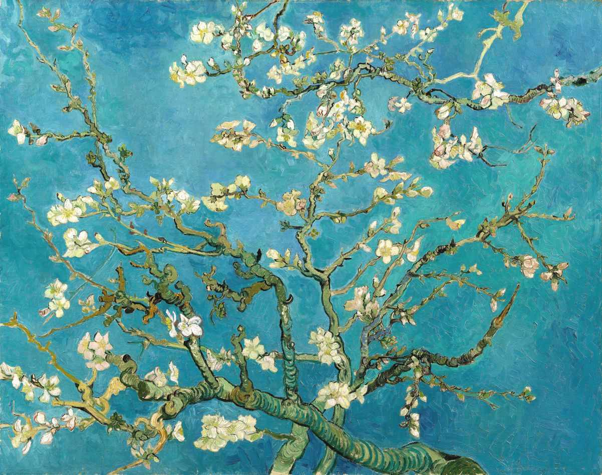
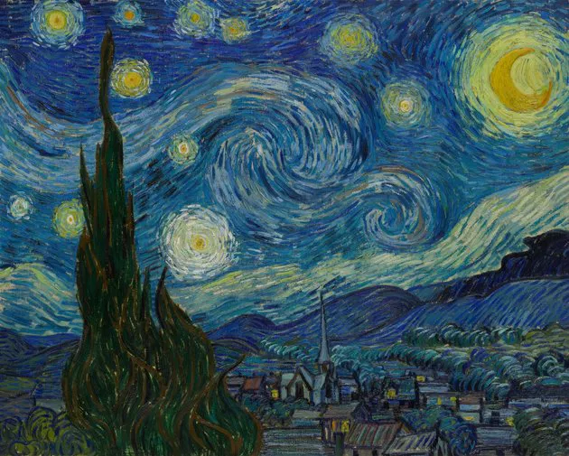
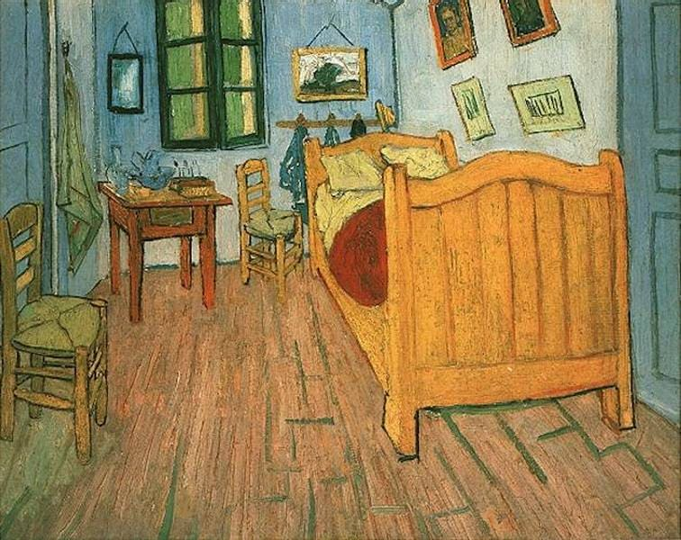
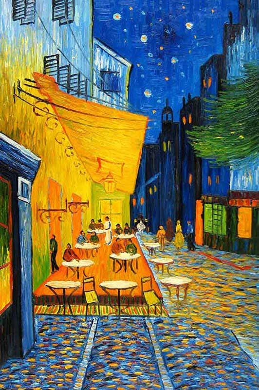

Amendoeira em Flor
Uma arte inspirada na cultura japonesa, feita para celebrar o nascimento do sobrinho do artista.

Noite Estrelada (1889)
Pintada de memória no sanatório; mostra céu com posições reais dos astros.

O quarto em Arles
Retrata o quarto de Van Gogh; possui três versões da obra.

Terraço do café (1888)
Primeira obra com céu estrelado e grande influência cultural.